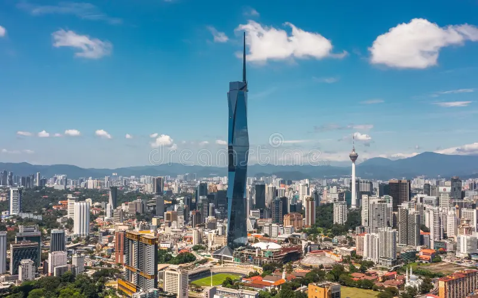

Edificios más altos del mundo.
-

Burj Khalifa(828m)
EAU DubaiUbicado en Dubái, Emiratos Árabes Unidos, fue inaugurado en 2010 y es una de las principales maravillas arquitectónicas del siglo XXI. Además de ser un ícono, el Burj Khalifa alberga oficinas, residencias, restaurantes y un lujoso hotel.
-

Merdeka 118 (679m)
Malasia Kuala LumpurInaugurado en 2022, su diseño moderno y elegante está inspirado en la identidad cultural de Malasia.Es un símbolo de la evolución arquitectónica y económica.
-

Torre de Shanghái(632m)
China ShangaiDestaca por su diseño futurista en forma de espiral ascendente. Con 128 pisos, alberga oficinas, un hotel de lujo, centros comerciales y áreas de observación.
-

Makkah Royal Clock Tower(601 m)
Arabia Saudita La MecaLa Makkah Royal Clock Tower, ubicada en La Meca, Arabia Saudita, es uno de los edificios más altos del mundo. Destaca por su enorme reloj, visible a gran distancia, y forma parte del complejo Abraj Al Bait. Alberga un hotel, áreas comerciales y espacios destinados a los peregrinos, siendo un importante símbolo religioso y arquitectónico.
-

Ping An Finance Cente(599 m)
China ShenzhenEl Ping An Finance Center, ubicado en Shenzhen, China, es uno de los rascacielos más altos del mundo. Destaca por su diseño moderno y elegante, y alberga oficinas, áreas comerciales y un mirador con vistas panorámicas de la ciudad. Es un símbolo del crecimiento económico y tecnológico de China.
-

Lotte World Tower(555 m)
Corea del sur SeúlLa Lotte World Tower, ubicada en Seúl, Corea del Sur, es uno de los rascacielos más altos del mundo. Destaca por su diseño elegante y moderno, y alberga oficinas, un hotel de lujo, áreas comerciales y un mirador con vistas panorámicas de la ciudad. Es un ícono del desarrollo urbano y tecnológico de Corea del Sur.